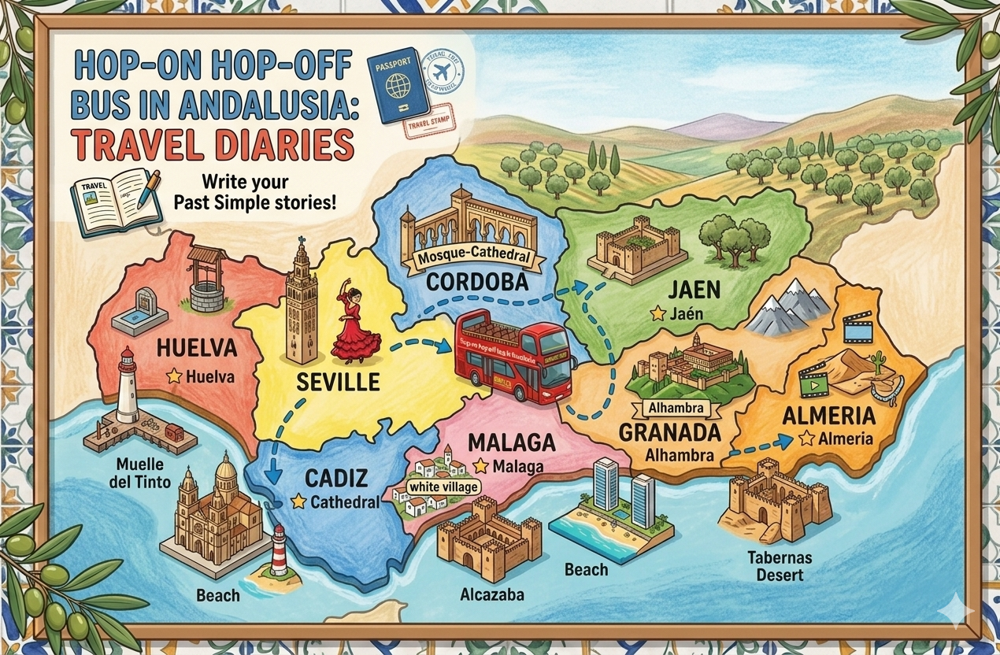

Datos clave del proyecto

Título: Hop-on Hop-off Bus in Andalusia: Travel Diaries
Nivel al que va dirigido: 6º Educación Primaria.
Área/Materia: Lengua Extranjera Inglés.
Idioma: Inglés.
Let’s travel through Andalusia in English!
Centro de interés o temática, y objetivos
Con motivo de la celebración del día de Andalucía se plantea la realización de este proyecto para ser realizado en las semanas previas a esta celebración. El proyecto se centra en dos centros de interés ya que por un lado pretende acercar la aspectos culturales de la comunidad andaluza a los alumnos y alumnas, a la vez que se introducen y trabajan contenidos de gramática. En concreto nos basamos en un autobús turístico imaginario que viaja por Andalucía, aprovechando para introducir este transporte tan curioso al alumnado, nos imaginamos que vamos haciendo paradas en distintos puntos de la comunidad. Los alumnos y alumnas deben imaginarse que los han visitado y que se disponen, como producto final, a escribir un diario de viaje de su visita. Con ello pretendo que el alumnado aborde la gramática relativa al pasado simple de los verbos regulares e irregulares, haciendo uso de la afirmación, negación e interrogación, si el texto lo permite.
A través del presente proyecto pretendo que mis alumnos sean capaces de:
- Producir pequeños textos escritos en los cuales hagan uso del pasado simple con verbos regulares e irregulares.
- Desarrollar la comprensión lectora y auditiva del alumnado al escuchar las explicaciones presenciales, así como, haciendo uso de vídeos con preguntas incrustadas de EdPuzzle.
- Fomentar la expresión escrita y la creatividad del alumnado elaborando un diario de viaje con párrafos estructurados y en base a un modelo dado.
- Promover el trabajo colaborativo al realizar el producto final en grupos de trabajo.
- Hacer uso de recursos digitales motivadores.
Relación con la rutina de pensamiento (Tarea 1.1.)
Teniendo en cuenta lo expuesto en la rutina de pensamiento, el proyecto que deseo realizar está directamente relacionado con la importancia de motivar al alumnado mediante el uso de metodologías activas y recursos digitales, así como con la necesidad de asegurarme de que todos los alumnos y alumnas puedan participar y realizar las actividades, un problema que ya identifiqué en mi práctica anterior y que se reflejó en la rutina de pensamiento.
A lo largo del proyecto incluiré el uso de distintos recursos digitales. Para la selección de los mismos tendré en cuenta el nivel de competencia digital de mi alumnado actual, la posibilidad que tienen de acceder a recursos digitales en sus casas, y finalmente, los recursos tecnológicos disponibles en el aula.
Aunque en este curso de competencia digital no se pone límite a la creatividad, mi intención es diseñar un proyecto realista y viable para ser aplicado en mi contexto escolar actual. Es posible que no se incluyan los recursos digitales más complejos y/o originales, pero se incluirán aquellos que estén adaptados a las necesidades y capacidades de mis alumnos y alumnas, asegurando de esta manera, la participación efectiva de todos ellos en el proyecto.